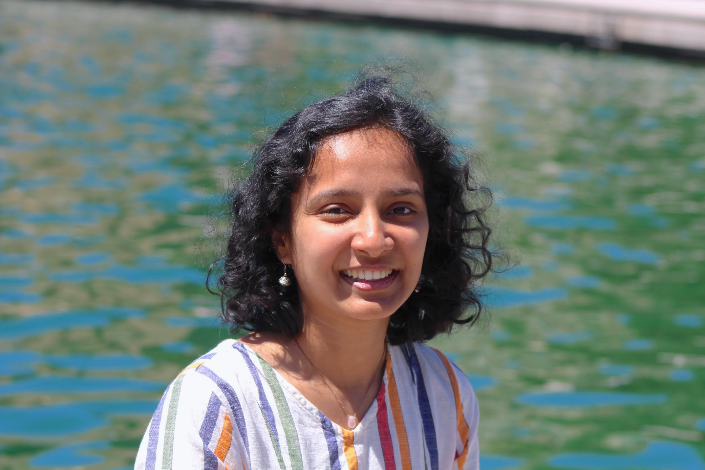

 I'm a PhD candidate at Paul G. Allen School of Computer Science and Engineering, co-advised by Dr. Jennifer Mankoff and Dr. Richard Ladner. Broadly, my research is in the area of accessibility and human-computer interaction. I like to explore ways in which technology and people can mediate access, particularly in communication contexts.
My dissertation work explores how we might better reflect multilingual and multimodal realities of d/DHH communication — signing, speaking, speechreading, writing, gesturing — in the study and design of communication accessibility technology. I'm increasingly curious about what it means to center the concept of languaging in this work, and how we might support minoritized access practices and fluidity of language use.
In 2020, I graduated from University of Delaware with Bachelors of Science in Computer Science and Cognitive Science, where I was advised by Dr. Debra Yarrington and Dr. Giovanna Morini. I'm also a UD Women's Golf Alumna!